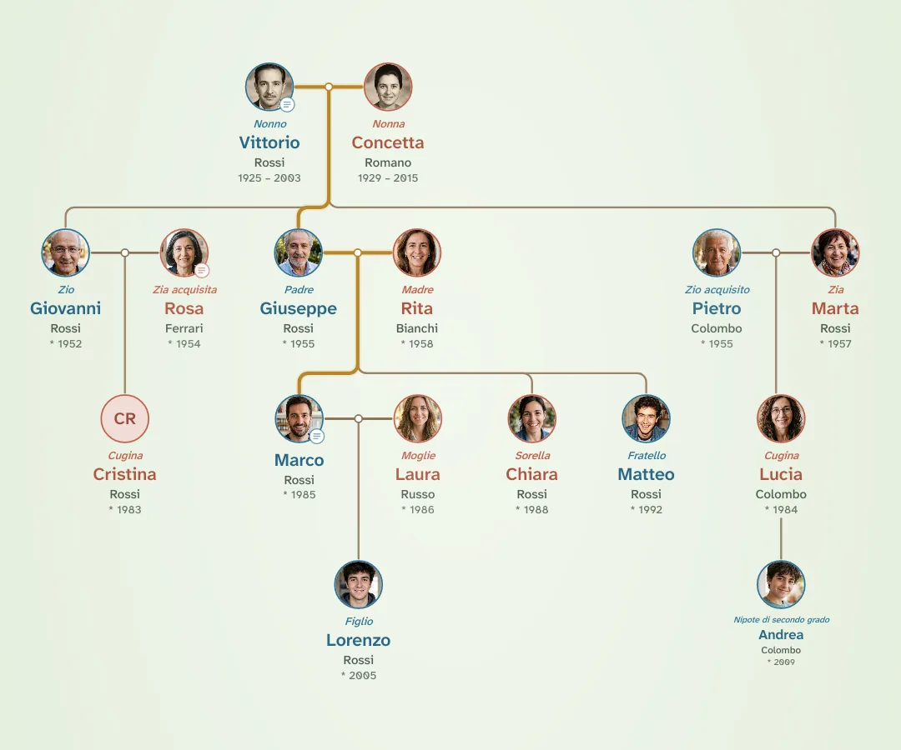

Calcolo del grado di parentela: cugini di secondo grado, prozii e pronipoti
Il figlio di tuo cugino è tuo cugino o tuo nipote? E perché i cugini «di primo grado» per la legge sono parenti di quarto grado? Scegli dov'è l'antenato che avete in comune e il calcolatore ti dice il nome della parentela e il suo grado.
L'antenato comune è la persona da cui discendete entrambi. Con un cugino sono i vostri nonni; con un cugino di secondo grado, i vostri bisnonni. Se uno discende dall'altro (un nipote, una bisnonna), scegli «Io» o «L'altra persona».
Come si chiama ogni parente
Dipende da quante generazioni ci sono tra ciascuno di voi e l'antenato comune:
- Fratelli: avete gli stessi genitori.
- Cugini (detti anche cugini di primo grado): avete gli stessi nonni. I vostri genitori sono fratelli.
- Cugini di secondo grado: avete gli stessi bisnonni. I vostri genitori sono cugini tra loro.
- Prozio o prozia: il fratello o la sorella di un nonno. Tu sei il suo pronipote.
- Zio di secondo grado: il cugino di tuo padre o di tua madre. Tu sei suo nipote di secondo grado.
Quindi il figlio di tuo cugino non è tuo cugino: è tuo nipote di secondo grado. I tuoi figli e i suoi, invece, sono cugini di secondo grado.
Tabella delle parentele
Cerca nella riga che cos'è l'antenato comune per te, e nella colonna che cos'è per l'altra persona. Nella casella trovi che parente è quella persona per te (al femminile: zia, cugina, pronipote…).
| Per te ↓ · per l'altra persona → | Genitori | Nonni | Bisnonni | Trisnonni | Quadrisnonni |
|---|---|---|---|---|---|
| Genitori | fratello | nipote | pronipote | bispronipote | parente lontano |
| Nonni | zio | cugino | nipote di secondo grado | pronipote di secondo grado | bispronipote di secondo grado |
| Bisnonni | prozio | zio di secondo grado | cugino di secondo grado | nipote di terzo grado | pronipote di terzo grado |
| Trisnonni | bisprozio | prozio di secondo grado | zio di terzo grado | cugino di terzo grado | nipote di quarto grado |
| Quadrisnonni | parente lontano | bisprozio di secondo grado | prozio di terzo grado | zio di quarto grado | cugino di quarto grado |
I gradi di parentela secondo il codice civile
Per la legge (art. 76 del codice civile) il grado si conta risalendo da una persona fino all'antenato comune e poi scendendo fino all'altra: ogni generazione è un grado. Per questo i cugini, che nel linguaggio di tutti i giorni sono «di primo grado», per la legge sono parenti di quarto grado.
| Grado | Parenti |
|---|---|
| 1° | Genitori e figli |
| 2° | Nonni, nipoti (figli dei figli) e fratelli |
| 3° | Bisnonni, pronipoti, zii e nipoti (figli dei fratelli) |
| 4° | Cugini, prozii e pronipoti (nipoti dei fratelli) |
Con la famiglia del coniuge (suoceri, cognati…) si parla di affinità, con lo stesso grado che ha il coniuge: i suoceri sono affini di primo grado, i cognati di secondo.
Il tuo albero, con la parentela di ognuno
In Ramo non c'è niente da calcolare: attiva «Parentela» e ogni scheda dell'albero dice che parente è quella persona per la persona principale (padre, zia, cugino, nipote, cognato, genero…), anche con i parenti acquisiti.

È gratis per iniziare, e l'albero si condivide in PDF con tutta la famiglia perché ognuno veda dove si trova.
Altre guide